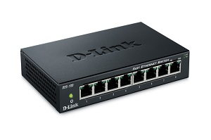
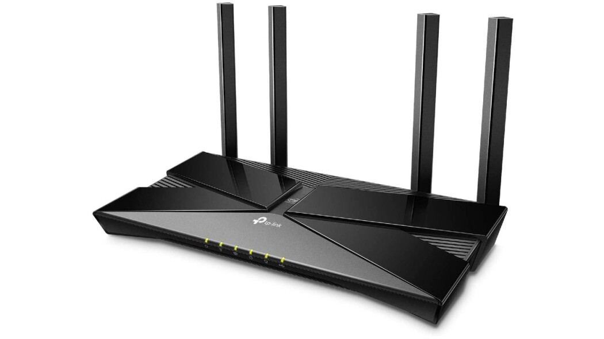
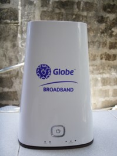
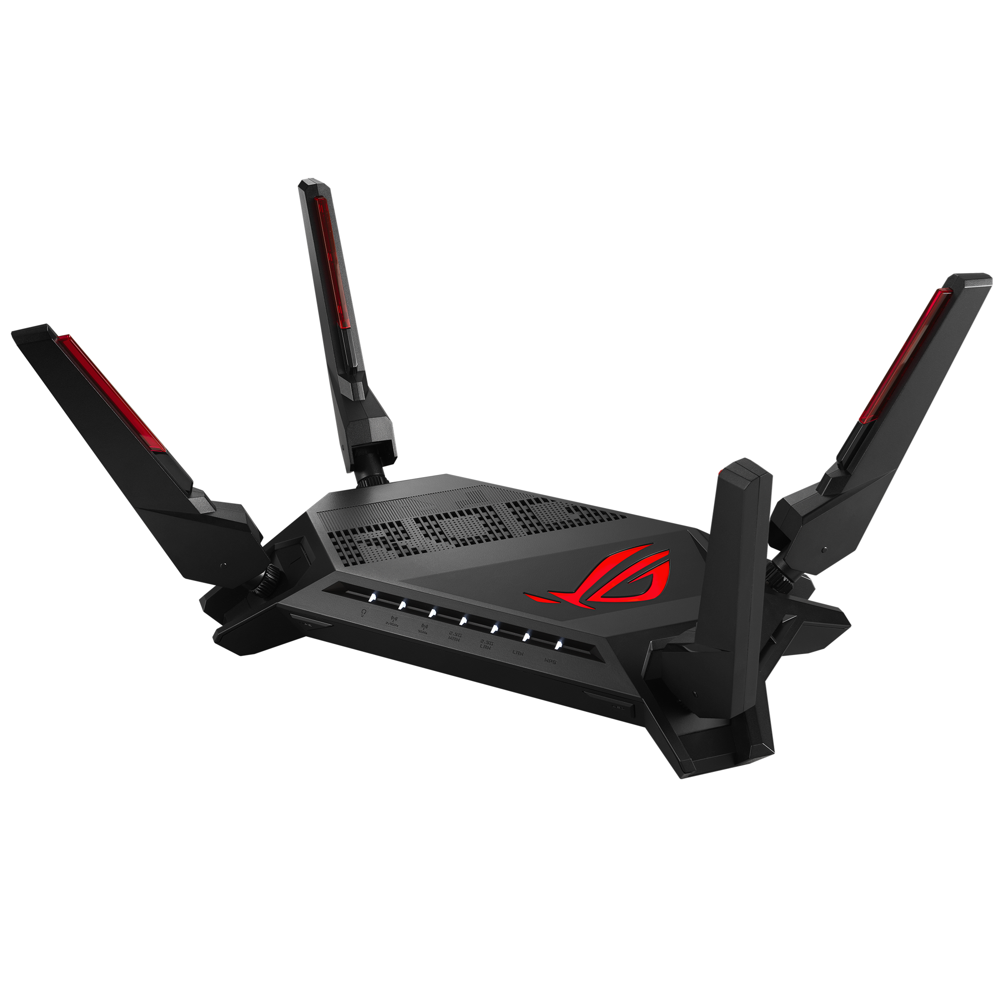
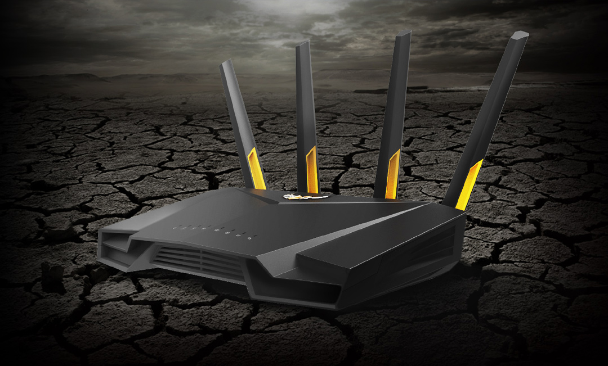

Are Hardware components used to connect computers or other electronic devices together so that they can share files or resources.
Common Network Devices
Network Interface Card(NIC)
Hub
Switch
Modem
Router
Repeater
Network Interface Card
Nic provides the physical interface between computer and cabling.
Is a transmitter/receiver (transceiver) that connects the computer to the transport medium.
It handles and decodes digital signals, and is in charge of all the messaging ins and outs on the computer.
It starts by taking the message that needs to be sent across the network.
It then turns the message into binary numbers, a series of 0's and 1's.
After that, it encodes these numbers, and sends corresponding voltage signals through an attached network cable.
NIC CARD
Hubs
A hub is an electrical device used in electronic circuits for connecting multiple devices together.
It is commonly used LAN connectivity devices.
It basically organizes your cables and relays data signals to all the computers on the LAN.
It is somewhat a multiport repeater.
HUB

Switch
A switch appears nearly identical to network hubs, but a switch contains more "intelligence" (and a slightly higher price tag) than a network hub.
A vital difference between a hub and a switch is that all the nodes connected to a hub share the bandwidth among themselves, while a device connected to a switch port has the full bandwidth all to itself.
For example, if 10 nodes are communicating using a hub on a 10-Mbps network, then each node may only get a portion of the 10 Mbps if other nodes on the hub want to communicate as well.
But with a switch, each node could possibly communicate at the full 10 Mbps.
A switch, which is often referred to as a "bridge on steroids," controls the flow of data by using the MAC address that is placed on each data packet.
SWITCH
Modem
A modem links your home network to the Internet through your Internet Service Provider(ISP).


Router
Routers are highly intelligent devices that connect multiple network types and determine the best path for sending data.
The advantage of using a router is that it can determine the best path that data can take to get to its destination.
Routers are normally used to connect one LAN to another.
Routers are used to segment LANs that have become very large and congested with data traffic. Routers are also used to connect remote LANs together using different WAN technologies.


Repeater
A repeater is an access point that extends the range of wireless coverage in a building or neighborhood by rebroadcasting signals
Repeaters are very simple devices. They allow a cabling system to extend beyond its maximum allowed length by amplifying the network voltages so they travel farther.
This device is a signal-amplifier/transmitter-receiver whose purpose is to amplify and re-clock a transmission signal between two cable segments.